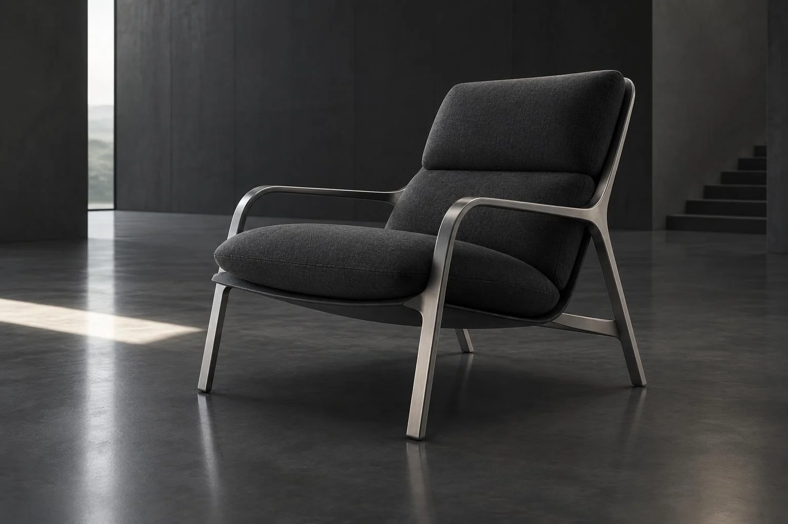

Portfolio / Illustrative concepts
PRODUCTS. IN A NEW LIGHT.
A collection of product-led visual explorations. All projects shown here are illustrative AI-generated concepts, not commissioned client work.
5 projects shown

Precision in motion
Industrial & Manufacturing
Product visualization · Material study

A study in time
Premium Consumer Products
Luxury CGI concept · Art direction

Sound in form
Consumer Electronics
Campaign concept · Product visuals

Inside the optics
Security & Automation
Exploded-view concept · Motion direction

Space to explore
Furniture & Interior Products
Spatial visualization concept · Interactive exploration
Your product. A new perspective.